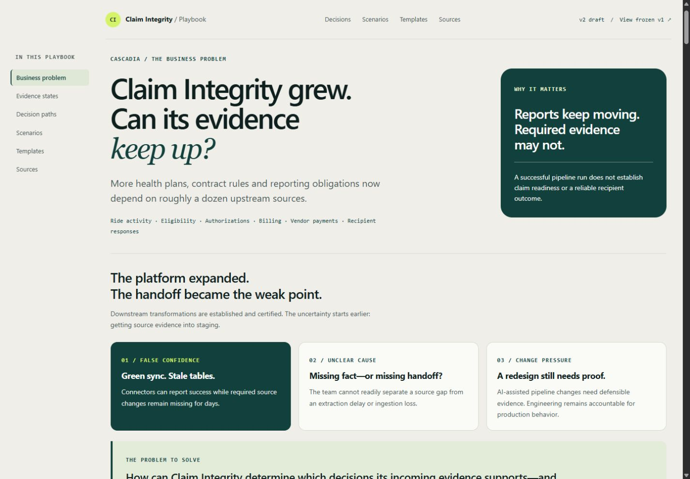

What must the reader be able to do?
12 user requirements connect the business problem to decisions, journeys and scope. Intended use anchors acceptance.
HOW DID I DO THIS? / A BUILD PROCESS, WITH EVIDENCE
AI tools generated implementation. Aaron framed the business problem, set the requirements, compared working builds and directed the refinements.
This project is a static decision playbook. No operational data, ingestion engine or production release is demonstrated.
01 / TURN INTENT INTO A HANDOFF
The business question came first: a successful sync can hide missing evidence. Two independently developed plans were critiqued and integrated, then deliberately reduced to a lightweight playbook.
The same stage prompt went to both platforms. Different cards show their outputs—not different instructions. Consolidation and scope revision came afterward.
Two independent starting points
A platform-neutral plan for the five decisions.
A repository-grounded plan for the same five decisions.
Each model challenges the other
Findings on evidence boundaries, retries, history and scope.
Findings on exposure, past actions and independent expectations.
Each author revises its own plan
Evaluate findings and record the revisions.
Evaluate findings and record the revisions.
Each adopts stronger ideas
Selected Claude approaches incorporated into the Codex plan.
Selected Codex approaches incorporated into the Claude plan.
Consolidate the two integrated plans
Compare the integrated plans with text metrics and a 40-criterion rubric, then combine the stronger approaches. This plan still described a data build.
Change the scope to fit the goal
Aaron specifies a quick, no-data playbook. The revised plan carries the decision safeguards into content and prepares the URS, FRS, SRS and implementation handoff.
12 user requirements connect the business problem to decisions, journeys and scope. Intended use anchors acceptance.
20 functional requirements cover guides, scenarios, navigation, history, download and print.
14 system requirements define files, identifiers, browser behavior and progressive enhancement.
The purpose was to reduce inference for a lower-cost implementation model. No measured token-cost saving is claimed.
02 / COMPARE WORKING RESULTS
Codex and Claude Code produced separate first working examples from the same handoff. Aaron compared the rendered results and chose Codex as the better foundation for the intended experience.
An editorial opening, compact decision cards and a strong visual hierarchy.
A working interpretation of the same brief, with different type, layout and emphasis.
Scroll inside either preview to explore the preserved initial build, including its guides, scenarios and templates. Use Full-screen view for more space, or Open full build for a separate browser tab. These local copies preserve the original files; their responsive layouts adapt to the preview width.
The preferred design still had review findings and needed substantial usability work. Visual preference did not replace verification, and this comparison is not a controlled model benchmark.
03 / DIRECTION AFTER SELECTION
A preserved visual v1 kept the baseline intact. The selected Codex output then went through user-directed v2 refinements, driven by actual screens and interactions.
Start with the MVP. Improve the current version until it is ready.
Find friction in a working screen.
Change. Check. Review the current result.
Make the next adjustment explicit.
Render and exercise the affected behavior.
Review the current result → direct the next change
Each check informs the next change. Repeat while further refinement is needed.
When the result is ready to accept
The refined, checked result is accepted. The loop stops.
WHAT CHANGED THROUGH THE LOOP
Expansion, the evidence gap and business consequences moved ahead of the five operating decisions.
Decision diagrams, sequential stages and genuine parallel lanes made the operating logic easier to follow.
Evidence states reuse labeled colors and icons. Color is tied to supportability, not added arbitrarily.
35 fields gained prompts and examples. Tables gained pinned names and headers, with a frozen first column only when needed.
Contextual navigation, section-bound sticky controls and attached subheads keep the reader oriented.
THE OUTCOME
The selected MVP became a business-first playbook through the review, change and check cycle. View the results below.

04 / KEEP CLAIMS TIED TO CHECKS
Builder reports were followed by independent review, targeted correction and a final UI/UX pass. Their evidence serves different purposes; a self-report is not an independent test.
Responsive layouts, keyboard behavior, scenario history, contrast sampling, navigation, tables, reduced motion, content fallback and download checks.
Actual 200% browser zoom, and native print pagination with return-state restoration. Constrained reflow and print-media inspection passed separately.
The original 30 functional acceptance cases were not all rerun. No WCAG certification, complete security audit or production data validation is claimed.
Aaron declared the playbook complete with these limits visible. The process view is a local addition; no new publication has been performed.
05 / THE CONTRIBUTION
Problem framing, scope, intended use, comparison of alternatives, visual direction, trade-offs and acceptance.
Plans, critiques, research synthesis, specifications, code generation, targeted fixes and documented checks.
A business question became an inspectable specification, two working alternatives, a deliberate choice and a refined, checked result. That is the work left out by simply naming the tools.
Inspired by pairing requirements with verification. This lightweight process is not a regulated validation lifecycle or proof of a production data platform.
Explore the completed playbook ↗